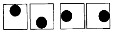
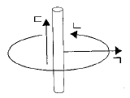
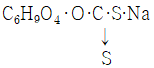

섬유디자인산업기사 (2002-05-26 기출문제)
1과목: 디자인개론
1. 모디파이(Modify)란?
- 색의 강약과 농담으로 나타내는 것
- 진색,중색,연색의 톤을 나타내는 것
- 무늬를 작업성에 일치되게 변경하여 이미지를 살리는 것
- 무늬의 이음을 일정하게 나열시키는 것
(정답률: 알수없음)

2. 섬유디자이너의 역할 설명 중 틀린 것은?
- 섬유디자이너는 유행 경향만을 가장 먼저 파악하여 디자인에 임해야 한다.
- 섬유디자이너는 조형적 미적 감각뿐만 아니라 상품기획의 concept, 소재에 대한 지식을 지녀야 한다.
- 경영자와 소비자의 다양하고 진정한 요구를 효율적으로 종합하여 디자인해야 한다.
- 과학적인 지식과 정보 집약으로 실용성과 미를 갖춘 제품을 위해 디자인을 해야 한다.
(정답률: 알수없음)
3. 컬러웨이 작업방법이 아닌 것은?
- 배색관계를 이해하여야 한다.
- 날염방법과 작업성을 생각한다.
- 계절별 컬러는 모두 통일성있게 한다.
- 색상도수를 작업성에 일치되게 한다.
(정답률: 알수없음)
4. 대비 현상 중 다음 그림은 어떤 대비현상인가?

- 명도대비
- 위치대비
- 면적대비
- 형태대비
(정답률: 알수없음)
5. 이미지에 형을 부여하는 단계로서 렌더링을 통해 구체화시키는 디자인 전개과정은?
- 시각화단계
- 아이디어단계
- 이미지단계
- 상품단계
(정답률: 알수없음)
6. 날염의 불량 중 색상별로 제작된 형이 인날시 정확하게 맞추어지지 못해서 한쪽은 포개지고 다른 한쪽은 흰 부분이 나타나는 현상은?
- 인장 오염(Marking off)
- 형 맞춤 불량(Miss Fitted)
- 번짐(Bleeding)
- 형 밟힘(Crashing)
(정답률: 알수없음)
7. 날염용 흰풀의 조제순서로 맞는 것은?
- 계량→ 혼합→ 여과→ 냉각
- 계량→ 혼합→ 여과→ 가열
- 계량→ 혼합→ 가열→ 냉각
- 계량→ 냉각→ 가열→ 혼합
(정답률: 알수없음)
8. 공백공포(空白恐怖 : horror vacui)설에 관한 설명 중 틀린 것은?
- 모든 인간이 가지고 있는 감정은 아니다.
- 현대인보다 미개인일수록 강하게 나타난다.
- 어린이들의 낙서가 그 예가 된다.
- 동굴이나 유적에 나와 있는 그림이 예가 될 수 있다.
(정답률: 알수없음)
9. 넥타이 디자인의 공정별 제조과정이 옳게 연결된 것은?
- 원단의 재단-조각이음-코 뒤집기와 아이론-안감붙임-봉합-정리-마무리
- 원단의 재단-조각이음-안감붙임-코 뒤집기와 아이론-봉합-정리-마무리
- 원단의 재단-안감붙임-조각이음-코 뒤집기와 아이론-봉합-정리-마무리
- 원단의 재단-안감붙임-코 뒤집기와 아이론-조각이음-봉합-정리-마무리
(정답률: 알수없음)
10. 텍스타일 상품기획과 거리가 먼 것은?
- 거래처 대상을 설정한다.
- 소재 결정을 한다.
- 시각디자인 계획을 설정한다.
- 디자인 컨셉트를 결정한다.
(정답률: 알수없음)
11. 형태, 색채와 함께 구성의 필수 요소로서 실제로 물체의 표면이 갖는 질감으로 촉각으로부터 시각적 촉감에 이르는 모든 느낌을 말한다. 이것은 무엇을 설명한 것인가?
- 크기(Size)
- 공간(Space)
- 재질감(Texture)
- 구도(Planning)
(정답률: 알수없음)
12. 미술공예운동의 가장 큰 의의는?
- 기계의 생산방식을 부정하며, 수공예적인 생산방식에 근거를 둠
- 기계의 생산방식에 대응한 아르누보 양식의 도입
- 수공예 생산방식을 부정하며, 기계의 생산방식에 근거를 둠
- 기계생산 방식에 의한 제품의 대량생산에 근거를 둠
(정답률: 알수없음)
13. 날염디자인 제작과정에서 실제적 표현의 수단(표현요소)이 되는 것은?
- 패턴, 재료, 기법
- 패턴, 기법, 색채
- 기법, 색채, 재료
- 패턴, 색채, 재료
(정답률: 알수없음)
14. 일반적으로 원단 길이방향,옷의 길이방향을 무엇이라 하는가?
- 톱
- 형구출입
- 포갬
- 샘플고정
(정답률: 알수없음)
15. 날염디자인 작업 순서에 있어 가장 먼저 중점을 두어 효과를 살려야 하는 무늬는?
- 검정 선
- 파랑 빗침선
- 노랑 빗침선
- 녹색 점
(정답률: 알수없음)
16. 종합조형학교인 바우하우스가 세워진 나라는?
- 프랑스
- 스위스
- 독일
- 영국
(정답률: 알수없음)
17. 상품기획에 있어서 각 브랜드별 고객의 라이프스타일을 분석하고 구매동기 및 구매패턴조사, 광고효과조사, 브랜드인지도조사 등의 내용을 갖는 정보에 해당하는 것은？
- 판매실적정보
- 소비자정보
- 국내외학술정보
- 관련산업부문정보
(정답률: 알수없음)
18. 텍스타일 디자인에 있어 갖추어야 할 조건이 아닌 것은?
- 시장성
- 가공성
- 예술성
- 주기성
(정답률: 알수없음)
19. 풍경사진의 사실적인 표현에 가장 유리한 날염방법은?
- 로타리날염
- 블록날염
- 방발염
- 전사날염
(정답률: 알수없음)
20. 직물을 구성하는 경사, 위사의 조직에 의해 직물표면에 여러 가지 무늬와 재질감을 나타내는 섬유디자인은?
- 니트 디자인
- 날염 디자인
- 직조 디자인
- 자수 디자인
(정답률: 알수없음)
2과목: 색채학
21. 색의 동화에 관한 설명으로 거리가 먼 것은?
- 인접색과 주위색이 서로 닮은 색으로 가깝게 느껴지는 현상이다.
- 동시적으로 일어나는 현상으로 회화, 그래픽 디자인, 직물 디자인 등의 배색 조화에 필수요소이다.
- 배경색의 면적이 작은 줄무늬나 면적이 작을 때, 주위에 비슷한 색이 있을 때 주로 나타난다.
- 망막이 주어진 색의 자극이 제거된 후에도 그 색각이 남아있는 경험을 갖는다.
(정답률: 알수없음)
22. 의복의 배색에 있어서 중시해야 할 점이 아닌 것은?
- 기능적 요소 외에 색채에 의해 강조되는 장식적 요소가 요구된다.
- 계절에 따른 소비를 자극하기 위해 주조색을 파악한다.
- 5W와 색채· 재질· 형태가 종합적 요소로 이루어져야 한다.
- 의복 형태에 따른 면적 비례는 크게 중요하지 않다.
(정답률: 알수없음)
23. 하늘의 색, 바다의 색, 사과의 색등 사물의 색에 대해 구체적인 대상과 연결한 색에 대한 지식은?
- 물체색
- 기억색
- 감정색
- 광원색
(정답률: 알수없음)
24. 푸르킨예 현상에 관한 적절한 설명은?
- 자극과 감각과의 관계는 물리적인 등비급수로 나타낼 수 있으며 자극의 증가하는 만큼 감각도 증가한다.
- 눈에 주어지는 빛의 휘도가 낮아짐에 따라서 즉, 명소시에서 암소시로 옮겨감에 의해서 일어나는 색지각현상이다.
- 어떤 색이 다른 색에 둘러싸여 있을 때 그 둘러싸인 색이 주변색과 닮아져 보이는 현상이다.
- 조명이나 색을 보는 객관적인 조건이 달라지더라도 주관적으로는 물체의 색이 거의 달라져 보이지 않는 현상이다.
(정답률: 알수없음)
25. 색채 전략에는 세 가지 기본형이 있는데 그 중에서 가장 거리가 먼 것은?
- 유행색 전략
- 보통색 전략
- 자극색 전략
- 저자극색 전략
(정답률: 알수없음)
26. 다음 그림은 색입체의 수직단면도를 도식화한 것이다. ㄱ,ㄴ,ㄷ 순을 올바르게 표시한 것은 ?

- 명도-채도-색상
- 혼색-명도-채도
- 채도-색상-명도
- 명도-혼색-채도
(정답률: 알수없음)
27. 색채계획과정 중 색채심리분석 단계의 연구 항목이 아닌 것은?
- 기업이미지 측정
- 유행이미지 측정
- 광고이미지 측정
- 컬러메뉴얼의 작성
(정답률: 알수없음)
28. 오스트발트의 색채 개념을 옳은 비율로 나타낸 것은?
- 순색량 + 백색량 + 흑색량 = 100
- 순색량 + 백색량 + 회색량 = 100
- 순색량 + 흑색량 + 회색량 = 100
- 흑색량 + 백색량 + 회색량 = 100
(정답률: 알수없음)
29. 색료의 3원색에 의한 감법혼색의 이론을 정립한 사람은?
- 크림슨
- 브류스터
- 몰스
- 머레이
(정답률: 알수없음)
30. 순색에 흰색을 섞어서 감소되는 것은?
- 색상
- 명도
- 채도
- 대비
(정답률: 알수없음)
31. 다음은 전자파에 대한 설명이다. 틀린 것은?
- 공간의 전자기의 상태변화의 파동에 대한 수학적 표시이다.
- 전자파의 범위는 파장, 주파수에 따라 다른 성질을 가지고 있다.
- 빛이란 방사되는 수많은 전자파 중 눈으로 지각할 수 있는 것이다.
- 전자파는 혼합할수록 명도와 채도가 낮아진다.
(정답률: 알수없음)
32. 색광의 3원색은 무엇인가?
- Red, Yellow, Blue
- Red, Green, Blue
- Chrome Yellow, Magenta, Blue Green
- Red, Yellow, Green
(정답률: 알수없음)
33. 색의 연상 및 상징에서 위안, 친애, 젊음, 초여름, 생장, 유아, 새싹에 해당되는 것은?
- G(초록)
- 1/2RG(연두)
- Bk(청자)
- R＋G＋B(하양)
(정답률: 알수없음)
34. 색채조화론 중 조화, 부조화의 관계를 미도 계산에 의해 나타낸 학자는?
- 비렌
- 저드
- 문, 스펜서
- 오스트 발트
(정답률: 알수없음)
35. 먼셀의 색상환에 대한 설명 중 틀린 것은?
- 1-10까지의 색상 중 다섯 번째를 대표색으로 정했다.
- 5R보다 7.5R이 황색기미가 크다.
- 5R보다 2.5R이 자색기미가 크다.
- 명도 번호가 클수록 어둡고 명도번호가 작을수록 밝다.
(정답률: 알수없음)
36. 파장의 범위가 380-430nm일 때 우리눈에는 무슨 색으로 보여지는가?
- 청색 띤 자색
- 녹색 띤 청색
- 황색
- 적색
(정답률: 알수없음)
37. 어떤 색이 다른 색의 영향으로 인하여 실제와는 다른 색으로 변해보이는 현상을 무엇이라 하는가?
- 색의 대비
- 색의 동화
- 색의 혼합
- 보색잔상
(정답률: 알수없음)
38. 오스트발트 표색계에 대한 설명이 아닌 것은?
- W(백)+B(흑)+C(순색량)= 100%이다.
- 등색상면을 구성하는데는 정3각형이 편리하다.
- E· Hering의 3원색설을 기본으로 한다.
- 등백계열, 등흑계열별로 배열하면 하나의 등색상면이 된다.
(정답률: 알수없음)
39. 색채의 조화에서 120도 배색이라 하며 원을 3등분한 색들의 배색을 무엇이라 하는가?
- 섹스타드 배색(sex-tard)
- 연속삼색배색(portamento)
- 삼각배색(trio)
- 분보색배색
(정답률: 알수없음)
40. 다음의 색상중에서 사람에게 부드러운 감정을 일으키고 안전의 상징으로 쓰이는 색은?
- 회색
- 빨강색
- 녹색
- 노랑색
(정답률: 알수없음)
3과목: 섬유재료학
41. 섬유의 분자 배향이 증가했을 때 다음 성질 중에서 가장 증가하는 것은?
- 신장도
- 광택
- 화학 반응성
- 염료의 흡수
(정답률: 알수없음)
42. 셀룰로스에 대한 설명중에서 옳지 않은 것은?
- 셀룰로스는 α β γ 셀룰로스의 3종으로 대별된다.
- 알코올, 에테르와 같은 용매에는 잘 녹는다.
- 백색, 무정형으로 열에 대한 저항성이 큰 편이다.
- 천연산 셀룰로스는 리그닌이나 펙틴 등의 불순물을 함유한다.
(정답률: 알수없음)
43. 양모섬유의 방향마찰차(D.F.E)를 줄여 형태를 안정시키고자 하는 처리는?
- 머서가공(mercerization)
- 염소처리(chlorination)
- 탄화처리(carbonizing)
- 디거밍(degumming)
(정답률: 알수없음)
44. 디나이트레이션(denitration) 공정이 필요한 인견은?
- 동암모니아 인견
- 니트로 셀룰로스 인견
- 초산섬유소 인견
- 비스코스 인견
(정답률: 알수없음)
45. 다음 중 나일론 66을 축합합성 하는 것은?
- 에틸렌글리콜과 테레프탈산
- 에틸렌글리콜과 헥사메틸렌디아민
- 아디프산과 헥사메틸렌디아민
- 아미프산과 시클로헥산온옥심
(정답률: 알수없음)
46. 다음 중 흡습시 강도 저하가 가장 큰 섬유는?
- 면
- 비스코스 레이온
- 아세테이트
- 폴리에스테르
(정답률: 알수없음)
47. 섬유가 외력에 의해 변형되고, 외력을 제거하면 순간적으로 처음 모양으로 되돌아가는 것은?
- 탄성변화
- 소성변화
- 유동
- 소성유동
(정답률: 알수없음)
48. 다음 섬유 중에서 열전도율이 가장 큰 섬유는?
- 견
- 면
- 양모
- 아마
(정답률: 알수없음)
49. 섬유구조가 치밀하고, 결정화도가 큰 폴리에스테르섬유의 염색에 사용되는 염료는?
- 직접염료
- 산성염료
- 분산염료
- 캐티온염료
(정답률: 알수없음)
50. 다음은 비스코스 레이온(viscose rayon)의 제조공정 중 중간 생성물이다. 해당되지 않는 것은?
- C6H9O4O.Na

- 비스코스 방사액
- C6H9O4.O.NH3
(정답률: 알수없음)
51. 면섬유를 수산화나트륨 용액에 처리하여 강력,광택 및 염료에 대한 친화력을 증가시키는 가공법은?
- 탄화법(carbonization)
- 염소처리법(chlorination)
- 머서화법(mercerization)
- 디나이트레이션(dinitration)
(정답률: 알수없음)
52. 다음 중 폴리프로필렌섬유의 특성이 아닌 것은?
- 비중이 작다.
- 흡습성이 적다.
- 염색이 어렵다.
- 내열성이 좋다.
(정답률: 알수없음)
53. 다음 중 잘못 설명된 것은?
- 탄성회복률이 크면 방적, 제직 중 섬유의 손상을 적게 입도록 한다.
- 탄성회복률이 크면 피복성은 양호한 편이다.
- 탄성회복률이 크면 유연하고 주름발생이 큰 편이다.
- 탄성계수가 크면 뻣뻣한 촉감의 직물이다.
(정답률: 알수없음)
54. 다음은 양모의 화학구조를 설명한 것이다. 잘못된 것은?
- 각종 α -아미노산의 중축합 반응에 의해 생성된 폴리펩티이드 쇄이다.
- 측쇄로써 친수성기 및 소수성기가 공존한다.
- 측쇄로써 산성기 및 염기성기가 공존한다.
- 글루코스의 연속적 결합물이다.
(정답률: 알수없음)
55. 다음 섬유 중에서 탄성계수가 가장 작은 것은?
- 면섬유
- 견사
- 비스코스인견
- 양모
(정답률: 알수없음)
56. 다음 섬유 중에서 내광성이 가장 좋은 섬유는?
- nylon
- wool
- polyacrylonitrile
- polypropylene
(정답률: 알수없음)
57. 다음 중 부가중합체(addition polymer)는?
- -(CH2CH)n-
- -[NH(CH2)5CO]n-
- -[(CH2)9COO]n-
- -[CH2CH2O]n-
(정답률: 알수없음)
58. 현미경을 이용하여 섬유의 측면을 관찰할 때 무명에 해당하는 것은?
- 폭이 넓고 띠 모양이다.
- 매끄럽고 막대 모양이다.
- 대나무와 같은 마디가 있다.
- 리본 모양의 꼬임이 있다.
(정답률: 알수없음)
59. 양모등급 결정의 주 인자는?
- 섬유장
- 크림프
- 섬도
- 불순물 함유량
(정답률: 알수없음)
60. 스테이플 파이버를 만들기 위한 굵은 필라멘트의 집합체를 무엇이라 하는가?
- 토우(tow)
- 슬라이버(sliver)
- 톱(top)
- 모노 필라멘트
(정답률: 알수없음)
4과목: 날염학
61. 반응성 염료의 날염풀감으로 가장 적합한 것은?
- 밀 녹말
- 알긴산나트륨
- 브리티시 고무
- 가공 녹말
(정답률: 알수없음)
62. T/C 혼방직물을 반응성 염료와 분산 염료로 날염시 요소를 첨가하는 이유는?
- 날염 후 풀을 섬유에 고착시키기 위하여
- 염료 용해, 발색성 향상을 위하여
- 날염 후 방수성 향상을 위하여
- 날염 후 촉감 향상을 위하여
(정답률: 알수없음)
63. O/W형 안료수지 염료의 성분 중 안료의 농도를 조절하는 약제는?
- 컬러베이스
- 리듀우서
- 바인더
- 아크라민
(정답률: 알수없음)
64. 폴리에스테르 직물을 분산염료로 염색한 후 환원세정을 하는데, 기대되는 효과가 아닌 것은?
- 직물표면에 부착되어 있는 여분의 염료 제거
- 마찰견뢰도 향상
- 선명한 색상
- 광택 증가
(정답률: 알수없음)
65. 승화성이 큰 분산염료를 이용하여 섬세한 무늬를 인쇄 만큼 정밀하게 날염하는 방법은?
- 교염
- 바틱염
- 전사날염
- 묘염
(정답률: 알수없음)
66. 날염 롤러의 조건이다. 틀린 것은?
- 조각하기에 알맞은 굳기를 가지고 있을 것
- 산이나 염류에 부식되지 않을 것
- 무늬의 전사가 쉬울 것
- 공기 또는 수분에 침식되지 않을 것
(정답률: 알수없음)
67. 롤러 날염기 중에서 날염용 포와 닿지 않는 부분은?
- 언더클로드
- 날염롤러
- 날염풀
- 가압 실린더
(정답률: 알수없음)
68. 다음 천연고무 중 합성섬유, 견섬유의 스크린 날염의 방염용 호료로 쓰이는 것은?
- 아라비아 고무
- 트라간트 고무
- 로우커스트 고무
- 구아 고무
(정답률: 알수없음)
69. 스크린 형의 제법에서 단백질과 중크롬산염 등의 혼합물을 응용하는 제법은?
- 절형법
- 방차법
- 그리는법
- 사진법
(정답률: 알수없음)
70. 날염시 날염풀에 거품이 발생하여 Pin Hole 이 생겨 날염부분에 얼룩 불량이 생기는 경우가 종종 있다. 이 때 거품을 제거하는 약제는?
- 발염제
- 방염제
- 방부제
- 소포제
(정답률: 알수없음)
71. 다음 중 섬유제도에서 포갬(over lap)의 설명으로 바르지 않은 것은?
- 색과 색의 경계가 겹치는 것으로 인날시 인날되지 않고 희게 나타나는 것을 방지하기 위함이다.
- 같은 색과의 연결부분은 Line 또는 복카시 등의 다른 색상으로 연결부위를 가리워 주고, 같은 색과의 포개임을 준다.
- Line이 있는 색과 색의 경계는 Line만큼 포개임시킨다.
- 포개임은 진한색에서 연한색으로 한다.
(정답률: 알수없음)
72. 다음 중 식물성 호료가 아닌 것은?
- 아교
- 소맥분
- 쌀
- 콩
(정답률: 알수없음)
73. 날염롤러의 크기 (규격)은 무엇으로 표시 되는가?
- 원주
- 길이
- 지름
- 반지름
(정답률: 알수없음)
74. 다음 중 반응염법에 쓰이는 염료는?
- 염기성염료
- 매염염료
- 반응성염료
- 황화염료
(정답률: 알수없음)
75. 롤러 날염용 흰풀로 적합하지 않은 것은?
- 브리티시고무
- 쌀가루
- C.M.C
- 밀녹말
(정답률: 알수없음)
76. 인날 되어야 할 부분에 스크린형이 막혀 부분적으로 흐려지거나 흰 반점이 생겨나는 것을 형막힘이라 한다. 이 중 형막힘의 발생 원인에 적합한 것은?
- 정련표백이 제대로 되지 않은 생지에 의해서
- 스크린형의 배열이 부적당하였을 때
- 주위의 공기가 청결하지 못하여 먼지 등이 날염호에 혼입 되었을 때
- 인날량이 지나치게 많을 경우
(정답률: 알수없음)
77. 반응성 염료로 면직물 날염시 특징이 아닌 것은?
- 선명한 색깔과 견뢰도가 양호하다.
- 고착법이 다양하다.
- 응용방법이 까다롭지 않다.
- 날염풀 선택이 어렵다.
(정답률: 알수없음)
78. 배트염료에 의한 셀룰로스 섬유의 날염법에 속하지 않는 것은?
- 증열법
- 콜로레진법
- 플래시에이지법
- 블로치법
(정답률: 알수없음)
79. 섬유에 대하여 친화력이 없어 고착제를 가지고 섬유에 고착시키며, 인날 열처리 후 수세공정이 필요없이 사용되는 것은?
- 천연염료
- 안료
- 반응성염료
- 염기성염료
(정답률: 알수없음)
80. 소수성섬유인 아세테이트, 폴리에스테르 섬유의 염색에 사용되는 염료는?
- 직접염료
- 산성염료
- 분산염료
- 산화염료
(정답률: 알수없음)